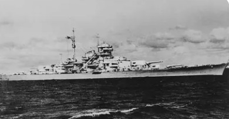
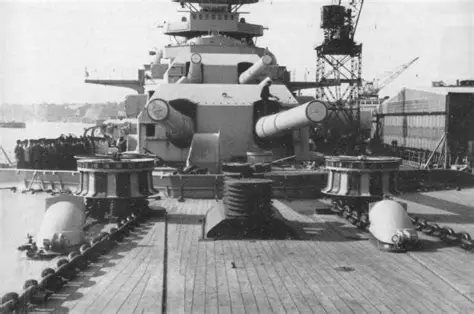

The Guns
Eight 38 cm (15-inch) main guns were arranged in four twin turrets. Secondary guns and anti-aircraft weapons provided additional defense.
WWII NAVAL HISTORY
The Bismarck was Germany's first and lead ship of the Bismarck class. Ships in the same class share a common design, though individual details may differ.
Eight 38 cm (15-inch) main guns were arranged in four twin turrets. Secondary guns and anti-aircraft weapons provided additional defense.
The Bismarck displaced about 50,000 tonnes at full load. Its armor belt reached up to 320 mm in thickness, protecting vital areas of the ship.
Three propeller shafts powered the ship, helping it reach speeds of about 30 knots in ideal conditions.
A crew of roughly 2,200 officers and enlisted sailors operated the ship and its many weapons and systems.
ON THE WATER


A powerful silhouette, designed to command the horizon.
The Bismarck combined a heavily armored hull with a formidable main battery, making it one of the most notable battleships of the war.
AT A GLANCE
| Ship | Belt armor | Fate |
|---|---|---|
| Bismarck | Up to 320 mm | Sunk May 27, 1941 |